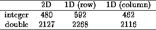

Three timing loops were written in Java to investigate the relative execution speed resulting from initializing a square matrix, n=500. The first loop initialized a 2D array, the second a 1D array with row order indexing, the third a 1D array with column order indexing. In the third loop (column order), the index product term was assigned to a dummy variable between the outer and inner loops. The timing was done by storing the system time (in milliseconds) before the loop, then taking the difference with system time returned after the loop. Garbage collection was forced before each timing call in an attempt to provide an identical execution environment for each loop.
The results of two experiments of 32 trials each are shown in Table B. The first experiment initialized arrays with the integer constant 1; the second with a double constant generated by raising a double to the power of another double. The 1D column order was the fastest, followed by the 2D and the 1D row order. The time differences reflect the both the number of statements and the time required to execute statements initializing the matrix within the inner loop. Disassembling the class file for the integer testing code (ArrayOps.java) shows that the 2D and 1D column order matrix indexing requires 6 instructions, while the 1D row order requires 8, due to the product term located within the index. Differences between the 2D and 1D column order are assumed due to variations in time required to execute different JVM instructions.

Table 1: Execution speed of array index operations depends on
the number and type of instructions required to index.
As would be expected, the time differences between initializing an integer and double is significant only in a relative sense. The absolute values of the differences are very similar. A better timing loop would measure time required for a matrix-matrix operation such as C = AB.
The following Java source code implements timing for index operations in two dimensional arrays that are accessed by different indexing methods. Although initializing array elements is a simple operation, the code could easily be extended to implement matrix-matrix operations.
/* This class performs a some simple timing for array operations. */ //
import java.lang. *;
public class ArrayOps
{
public static void main (String[]args)
{
System.out.println (" 2D 1D 1D2");
for (int i = 0; i < 33; i++)
{
twoD ();
oneD ();
oneD2 ();
System.out.println ();
}
}
public static void twoD ()
{
System.gc ();
long time = System.currentTimeMillis ();
int i, j;
double[][] A = new double[500][500];
for (i = 0; i < 500; i++)
{
for (j = 0; j < 500; j++)
{
A[i][j] = Math.pow (3.14159, 2.718);
}
}
System.out.print (" " + (System.currentTimeMillis () - time));
}
public static void oneD ()
{
System.gc ();
long time = System.currentTimeMillis ();
int i, j, LDA;
double[] A = new double[500 * 500];
LDA = 500;
for (i = 0; i < 500; i++)
{
for (j = 0; j < 500; j++)
{
A[i + j * LDA] = Math.pow (3.14159, 2.718);
}
}
System.out.print (" " + (System.currentTimeMillis () - time));
}
public static void oneD2 ()
{
System.gc ();
long time = System.currentTimeMillis ();
int i, j, LDA;
double[] A = new double[500 * 500];
LDA = 500;
for (j = 0; j < 500; j++)
{
int k = j * LDA;
for (i = 0; i < 500; i++)
{
A[i + k] = Math.pow (3.14159, 2.718);
}
}
System.out.print (" " + (System.currentTimeMillis () - time));
}
} // End class file.
//
The class file of the ArrayOps class was disassembled into Jasmin opcode to examine the instructions required by the JVM to implement each type of array access method.
; ; Output created by D-Java (mailto:umsilve1@cc.umanitoba.ca) ;
;Classfile version: ; Major: 45 ; Minor: 3
.source ArrayOps.java .class public synchronized ArrayOps .super java/lang/Object
; >> METHOD 1 << .method public static main([Ljava/lang/String;)V .limit stack 2 .limit locals 2 .line 13 getstatic java/lang/System/out Ljava/io/PrintStream; ldc " 2D 1D 1D2" invokevirtual java/io/PrintStream/println(Ljava/lang/String;)V .line 14 iconst_0 istore_1 goto Label2 .line 16 Label1: invokestatic ArrayOps/twoD()V .line 17 invokestatic ArrayOps/oneD()V .line 18 invokestatic ArrayOps/oneD2()V .line 19 getstatic java/lang/System/out Ljava/io/PrintStream; invokevirtual java/io/PrintStream/println()V .line 14 iinc 1 1 Label2: iload_1 bipush 33 if_icmplt Label1 .line 11 return .end method
; >> METHOD 2 << .method public static twoD()V .limit stack 6 .limit locals 5 .line 25 invokestatic java/lang/System/gc()V .line 26 invokestatic java/lang/System/currentTimeMillis()J lstore_0 .line 28 sipush 500 sipush 500 multianewarray [[D 2 astore 4 .line 31 iconst_0 istore_2 goto Label4 .line 33 Label1: iconst_0 istore_3 goto Label3 .line 35 Label2: aload 4 iload_2 aaload iload_3 ldc2_w 3.14159 ldc2_w 2.718 invokestatic java/lang/Math/pow(DD)D dastore .line 33 iinc 3 1 Label3: iload_3 sipush 500 if_icmplt Label2 .line 31 iinc 2 1 Label4: iload_2 sipush 500 if_icmplt Label1 .line 38 getstatic java/lang/System/out Ljava/io/PrintStream; new java/lang/StringBuffer dup ldc " " invokenonvirtual java/lang/StringBuffer/<init>(Ljava/lang/String;)V invokestatic java/lang/System/currentTimeMillis()J lload_0 lsub invokevirtual java/lang/StringBuffer/append(J)Ljava/lang/StringBuffer; invokevirtual java/lang/StringBuffer/toString()Ljava/lang/String; invokevirtual java/io/PrintStream/print(Ljava/lang/String;)V .line 23 return .end method
; >> METHOD 3 << .method public static oneD()V .limit stack 6 .limit locals 6 .line 43 invokestatic java/lang/System/gc()V .line 44 invokestatic java/lang/System/currentTimeMillis()J lstore_0 .line 46 ldc 250000 newarray double astore 5 .line 47 sipush 500 istore 4 .line 48 iconst_0 istore_2 goto Label4 .line 50 Label1: iconst_0 istore_3 goto Label3 .line 52 Label2: aload 5 iload_2 iload_3 iload 4 imul iadd ldc2_w 3.14159 ldc2_w 2.718 invokestatic java/lang/Math/pow(DD)D dastore .line 50 iinc 3 1 Label3: iload_3 sipush 500 if_icmplt Label2 .line 48 iinc 2 1 Label4: iload_2 sipush 500 if_icmplt Label1 .line 55 getstatic java/lang/System/out Ljava/io/PrintStream; new java/lang/StringBuffer dup ldc " " invokenonvirtual java/lang/StringBuffer/<init>(Ljava/lang/String;)V invokestatic java/lang/System/currentTimeMillis()J lload_0 lsub invokevirtual java/lang/StringBuffer/append(J)Ljava/lang/StringBuffer; invokevirtual java/lang/StringBuffer/toString()Ljava/lang/String; invokevirtual java/io/PrintStream/print(Ljava/lang/String;)V .line 41 return .end method
; >> METHOD 4 << .method public static oneD2()V .limit stack 6 .limit locals 7 .line 60 invokestatic java/lang/System/gc()V .line 61 invokestatic java/lang/System/currentTimeMillis()J lstore_0 .line 63 ldc 250000 newarray double astore 5 .line 64 sipush 500 istore 4 .line 65 iconst_0 istore_3 goto Label4 .line 67 Label1: iload_3 iload 4 imul istore 6 .line 68 iconst_0 istore_2 goto Label3 .line 70 Label2: aload 5 iload_2 iload 6 iadd ldc2_w 3.14159 ldc2_w 2.718 invokestatic java/lang/Math/pow(DD)D dastore .line 68 iinc 2 1 Label3: iload_2 sipush 500 if_icmplt Label2 .line 65 iinc 3 1 Label4: iload_3 sipush 500 if_icmplt Label1 .line 73 getstatic java/lang/System/out Ljava/io/PrintStream; new java/lang/StringBuffer dup ldc " " invokenonvirtual java/lang/StringBuffer/<init>(Ljava/lang/String;)V invokestatic java/lang/System/currentTimeMillis()J lload_0 lsub invokevirtual java/lang/StringBuffer/append(J)Ljava/lang/StringBuffer; invokevirtual java/lang/StringBuffer/toString()Ljava/lang/String; invokevirtual java/io/PrintStream/print(Ljava/lang/String;)V .line 58 return .end method
; >> METHOD 5 << .method public <init>()V .limit stack 1 .limit locals 1 .line 8 aload_0 invokenonvirtual java/lang/Object/<init>()V return .end method